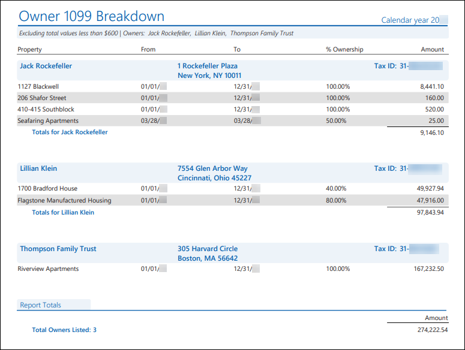
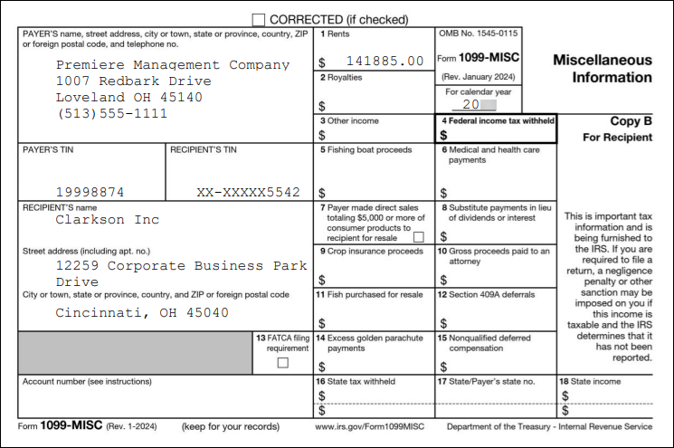

Source: https://rmxhelp.rentmanager.com/Topics/Express/KB/1099-Owner-eFile.htm
Generate and Export Owner 1099s
If you are a property management company and filing on behalf of the owners of the properties you manage every year, you will need to issue 1099s. Before you send these tax forms to the IRS, however, it is important to make sure the information is correct so that you don't have to file a corrected form later and risk any incurred penalties. You will also want to generate a copy to send to your owners' for their own records. As of 2023, per IRS regulations, if you have ten or more owner 1099s, you must eFile the forms. This electronic filing can be done efficiently via Rent Manager's export 1099 tool.
Related Privileges
| Group | Privilege | Column |
|---|---|---|
| Payables | Export 1099 | Enabled |
| Letter/Email Templates/Reports/Packets | Run reports | Enabled |
Additionally, on the Reports tab, you must have access to Owner 1099, Owner 1099 Breakdown, and Owner 1099 Copy B.
For more information, refer to Control User Access.
Warning
Before you begin, it's important to ensure that you have access to the properties and owners for which you need to generate 1099 data. Rent Manager will only generate data for properties that you have access to and for owners associated with those properties.
Step 1: Verify 1099 Amounts
When filing taxes, there is a common misconception that owner 1099s are based on net income. In truth, the amounts of your owner 1099s should be based on the total (gross) income collected for the owner's entire portfolio, excluding Non Operating Income (i.e., investment income) and Non Controllable Income (i.e., fixed income from a long term lease or government payments like social security). It is essential that you verify the amounts are correct based on this income information when filing.
More Information
Subsidy income may or may not be taxable depending on who issued the subsidy. If the subsidy income is not reportable on the 1099 as taxable income, you must classify it as either Non Controllable Income or Non Operating Income because Rent Manager doesn’t count these categories towards the 1099 taxable income calculation.
Consult your certified public accountant (CPA) for guidance concerning the local laws and classification of income.
This means when generating the owner 1099 tax forms, Rent Manager tallies the year’s entire income received for the property within the owner's contract dates. Income received outside the owner contract dates is not included, nor is any money paid to the owner throughout the year.
To verify your owner 1099 amounts, you can generate the Owner 1099 Breakdown report, which displays ownership information as well as the gross income of each owner's properties.
To generate this report, do the following:
-
Go to
 arrow_forward Owners arrow_forward Accounting arrow_forward Owner 1099 Breakdown.
arrow_forward Owners arrow_forward Accounting arrow_forward Owner 1099 Breakdown.
The Reports: Owner 1099 Breakdown page displays. -
Adjust the report options as desired. For more information, refer to Owner 1099 Breakdown (Report).
More Information
Make note of the report options you use for the Owner 1099 Breakdown report, as the 1099 information you file and the 1099 copies you generate for your owners must match to ensure the correct data is being reported to the IRS.
-
Click Generate Report.

The report displays each owner, their default address, and tax ID number. Below each owner is a list of all the properties in their portfolio with the following information:
| Column | Description |
|---|---|
|
From |
If the owner's contract started after the start of the selected year, the date on which the owner's contract began displays. Otherwise January 1 of the selected year displays. |
|
To |
If the owner's contract ended before the end of the selected year, the date on which the owner's contract ended displays. Otherwise December 31 of the selected year displays. |
|
% Ownership |
The percentage of ownership this owner has for the property. |
|
Amount |
The total amount of gross income an owner earned from each property calculated by their ownership percentage and active contract dates for the selected calendar year. The subtotal of all gross income each owner earned displays at the bottom of each owner's subsection. |
More Information
The information that displays in this report is collected from your Rent Manager database. If any information is incorrect, you must resolve the error associated with the owner(s) in Rent Manager. For more information, refer to Owner 1099 Breakdown (Report).
Step 2: Export Owner 1099s
After confirming that your owner information is correct and up-to-date, you can create a file using the Export 1099 tool that you can then upload to the Filing Information Returns Electronically (FIRE) system, which requires a Transmitter Control Code (TCC) issued by the IRS. When you file you 1099-NEC or 1099-MISC returns electronically, you do not need to submit the corresponding 1096 paper forms because the export file automatically includes that information.
More Information
As of 2023, per IRS regulations, if you have ten or more owner 1099s, you must eFile the forms. For more information, refer to https://www.irs.gov/e-file-providers/filing-information-returns-electronically-fire.
If you have fewer than ten 1099s and wish to file manually, you can generate the Owner 1099 and Owner 1096 reports to file. For more information, refer to Owner 1099 (Report) or Owner 1096 (Report).
To export your owner 1099 forms, go to  arrow_forward Payables arrow_forward General arrow_forward Export 1099. For more information, refer to Export 1099 Owner.
arrow_forward Payables arrow_forward General arrow_forward Export 1099. For more information, refer to Export 1099 Owner.
If you need to export corrected Owner 1099 forms, go to  arrow_forward Payables arrow_forward General arrow_forward Export Corrected 1099. For more information, refer to Export Corrected Owner 1099.
arrow_forward Payables arrow_forward General arrow_forward Export Corrected 1099. For more information, refer to Export Corrected Owner 1099.
Step 3: Generate 1099 Copies for your Owners
You can generate the Owner 1099s in Rent Manager without needing a pre-printed form by using the Owner 1099 Copy B report.
Warning
Because the Copy B 1099s are not on official preprinted forms, they are intended solely for your owners' records and cannot be substituted as a submission to the IRS. It is recommended that you refer to the official IRS publications and consult with your accountant to determine the proper methods to distribute these copies to their recipients.
Related Privileges
| Group | Privilege | Column |
|---|---|---|
| Letter/Email Templates/Reports/Packets | Run reports | Enabled |
Additionally, on the Reports tab, you must have access to Owner 1099 Copy B.
For more information, refer to Control User Access.
To generate the Owner 1099 Copy B reports, do the following:
-
Go to
arrow_forward Owners arrow_forward Accounting arrow_forward Owner 1099 Copy B.
The Reports: Owner 1099 Copy B page displays. -
Adjust the report options as desired, remembering these options should match the selections you made when generating the Owner 1099 Breakdown and the options selected when exporting the 1099 data. For more information about the report options, refer to Owner 1099 Copy B (Report).
-
Click Generate Report.

More Information
If you opted to Run owners separately, you can choose to print and mail the forms to the owners manually, send them out via email, mail them via the Virtual Post Office (VPO), or publish them to each owner's Owner Web Access (OWA) portal. For more information, refer to Share Reports.